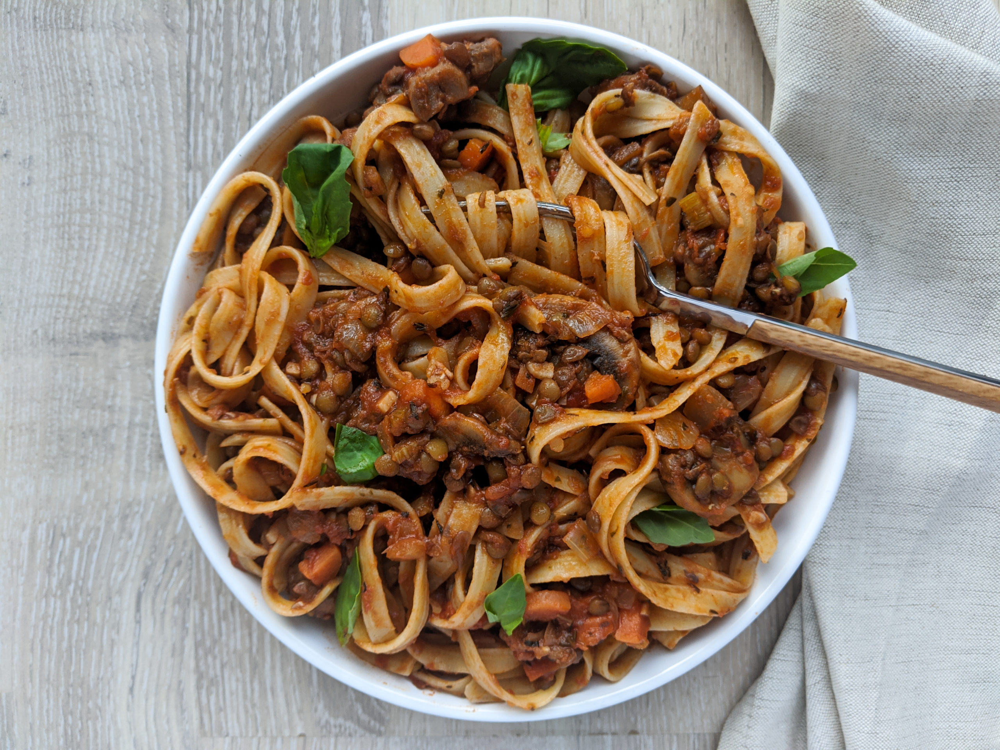

50 mins
serves 2
ingredients
-
1/2 tsp freshly ground salt
-
1/2 tsp freshly ground black pepper
-
1 tsp dried oregano
-
1 tsp cumin
-
2 garlic gloves, sliced
-
2 tbsp olive oil
-
1 bay leaf
-
2 tsp soy sauce
-
100ml red wine
-
200g chopped tomatoes
-
50g red split lentils, rinsed thoroughly
-
50g closed-cup mushrooms, diced
-
2 medium-sized carrots, peeled and grated
-
1 medium-sized onion, finely diced or grated
-
parmesan cheese, finely grated
instructions
-
Prepare the onions, garlic, mushrooms, carrots and lentils as directed in the ingredients. For the lentils, rinse until the water runs clear, then leave them submerged in water and set aside.
-
Add the olive oil into a large pot and set on a medium-low heat. Once the oil is a sufficient temperature, add the carrot, onion and mushrooms and sauté until you can see the onions starting to sweat.
-
Stir in the garlic and sauté for a minute, then drain your lentils and add them to the pan. Reduce the heat a touch so that the ingredients are at a light simmer.
-
Stir in the cumin, oregano and bay leaf, then cook for another 5-7 minutes.
-
Add the chopped tomatoes, stir, and leave to cook for another 5 minutes. Add in a small amount of water if you think the sauce is getting too thick.
-
After the chopped tomatoes have been well integrated into the meal, now we can add our red wine and soy sauce. Stir through and leave to gently simmer for around 20 minutes. Taste and season accordingly.
-
With around 10 minutes left until the meal is ready, bring a pot of salted water to the boil and add in the spaghetti. Cook according to packet instructions.
-
Drain the spaghetti and plate up. Grate over some parmesan cheese if you feel like it. In any case, enjoy!
notes
-
This recipe has been simplified and adapted from another recipe I found online. If you're feeling extravagant before you make this meal and you have the extra ingredients, I recommend you follow that recipe instead.
-
The reason why we add in the chopped tomatoes, soy sauce and red wine after the lentils have been cooking for a while is to allow them to cook properly. Adding salt or acidic ingredients too early will disrupt the lentil's cooking process, so eating uncooked lentils can lead to digestion issues and a rather gassy individual. Normally lentils take longer to cook, but because they have been rinsed and soaked, it takes less time to cook them.
-
Make this recipe vegan by removing the addition of parmesan cheese.
-
Feel free to add in a teaspoon of tomato purée with the red wine and soy sauce if you like your bolognese meals to pack a tomatoey punch.